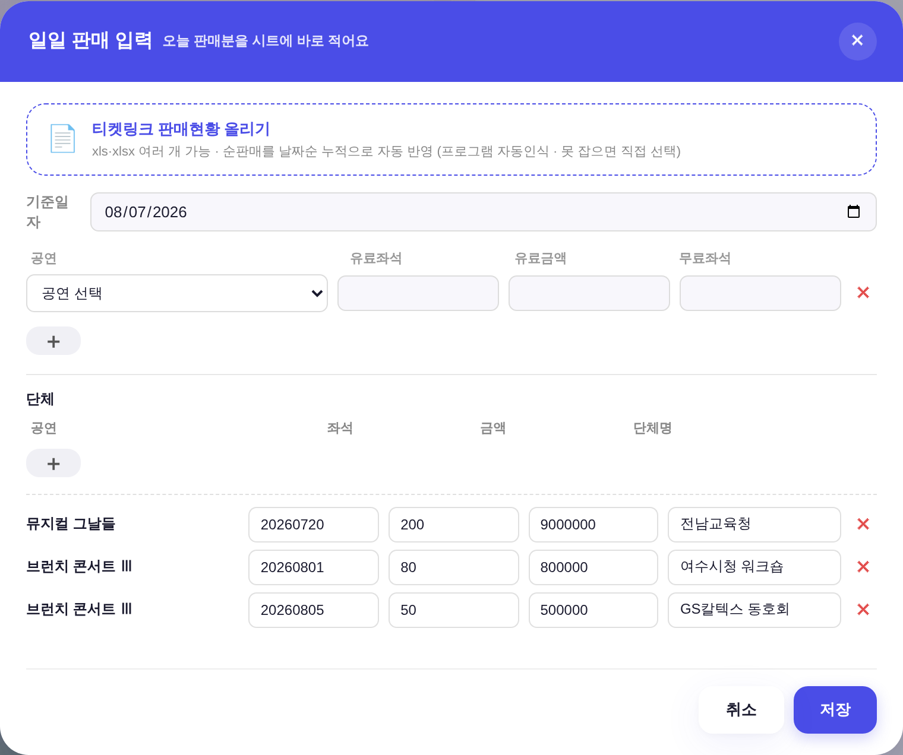
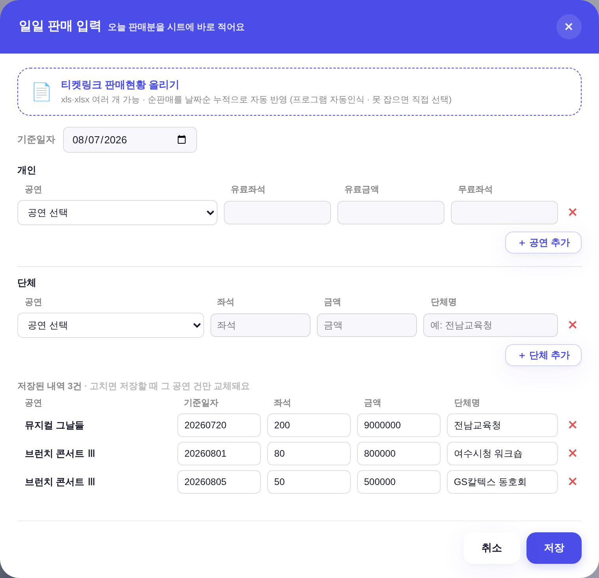
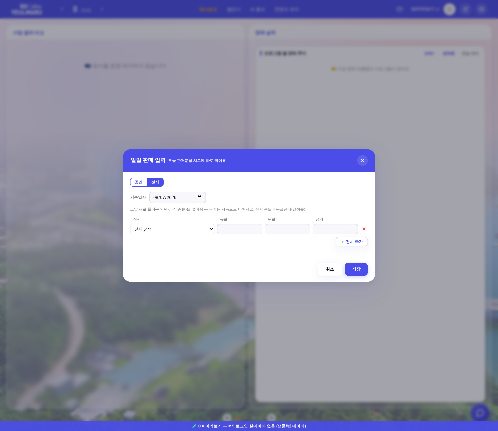

머리글 span은 flex 기저가 0인데, 입력칸은
.modal input{box-sizing:border-box} + padding:7px 8px + border:1.5px라
기저가 19px로 깔린다 → 남는 폭을 서로 다르게 나눠 갖는다. 머리글과 행이 각자 flex 값을 따로 타이핑하고 있어서
아무도 이걸 못 봤다. 이제 열 규격 배열 하나(_DAILY_COLS)에서 머리글·입력행이 같이 나온다.
| 구간 | 라벨 | 전 — 라벨 x | 전 — 칸 x | 전 — 어긋남 | 후 — 어긋남 |
|---|---|---|---|---|---|
| 개인 | 유료좌석 | 664.8 | 654.0 | +10.8 | +0.6 |
| 유료금액 | 803.2 | 798.0 | +5.2 | +0.4 | |
| 무료좌석 | 941.6 | 942.0 | −0.4 | +0.2 | |
| 단체 저장된 내역 (4열 머리글 아래 5열 목록) |
좌석 | 645.5 | 697.1 | −51.6 = 기준일자 칸 위 | +0.9 |
| 금액 | 774.2 | 814.8 | −40.6 | +0.5 | |
| 단체명 | 903.0 | 932.4 | −29.4 | +0.1 |
.pm-fbtn = 「글래스모피즘 표준 버튼
(--glass-surface + blur + --glass-bd + --glass-shadow) · 신규 화면 버튼도 이 형태 우선」.
260705 「앱 전체 글래스 통일」로 이미 16종 클래스가 이 톤을 쓰고 있다..nb-btn.ghost = background:#f0f0f5 — 불투명 회색. 유리 축이 아니었다..btn--glass(값·hex 신규 0) · --ghost와 겹쳐 써서 잉크·테두리는 ghost 자구 계승.transparent)으로 두지 않은 이유 = 흰 모달 위에서 테두리·그림자까지 사라져
「눌러야 할 것」이라는 단서가 0이 된다. 유리 면 + 옅은 강조 테두리가 어우러지면서 남는 지점.rgba(255,255,255,0.78) · blur(8px) ·
테두리 rgba(74,77,231,0.25) · 그림자 --glass-shadow · 잉크 #4A4DE7(대비 5.6:1 = AA) ·
3곳(공연·단체·전시) 1갈래.| 자리 | 전 | 후 |
|---|---|---|
| 단체 아래 구분선 | 점선 1px dashed --border2 | 폐지 — 여백 18px + 「저장된 내역 N건」 캡션 |
| 단체 입력행 | 0행(머리글만 떠 있음) | 예시 1행(개인 축과 같은 규칙 · 빈 행은 저장 0) |
| ＋ 자리 | 좌측 · 회색 알약 · 라벨 없음 | 우측 · 유리 · 「＋ 공연/단체/전시 추가」 |
| 기준일자 | 라벨이 「기준일/자」로 잘리고 날짜칸이 폼 전폭(.modal input{width:100%}) | 라벨 nowrap · 날짜칸 170px |
| 절 이름 | 단체만 이름 있음(위 블록은 무명) | 「개인」 / 「단체」 두 절 대등 |
| 회차수 칸(needRc) | 같은 줄에 끼어 그 행만 열이 하나 늘어남 = 앞 4열 전부 어긋남 | 둘째 줄로 내림 + 라벨·설명 동반(앞 4열 무접촉) |
| ＋ 3종 혼재 | 회색 알약(공연·단체) + 점선 뉴트럴(전시) | 정본 유리 ＋ 한 벌 |
| 삭제 ✕ | 4곳에서 인라인 재타이핑(폭도 22 vs 머리글 빈칸 24) | 빌더 _dailyXBtn 한 곳 · 폭 _DAILY_XW 공유 |

npm run check 전건 PASS — check_design 1540/1540(raw hex −2 청산 · 신규 0) ·
check_refs · check_modal_head(63개) · check_exchart · parity(증가 0) · bizchart · wizard · bkchat · press · _YR 정합_dailyReadDOM 값 읽힘(6) · 빈 예시행 저장 대상 0 · pageerror 0